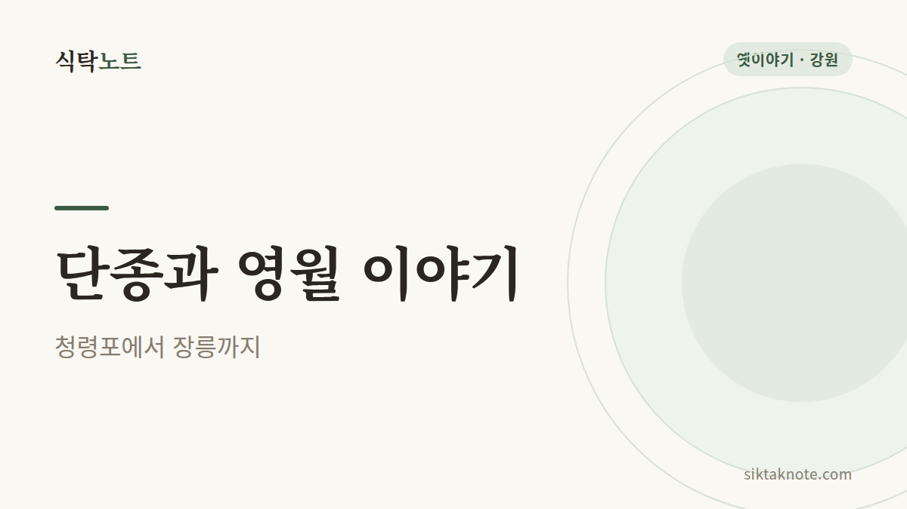
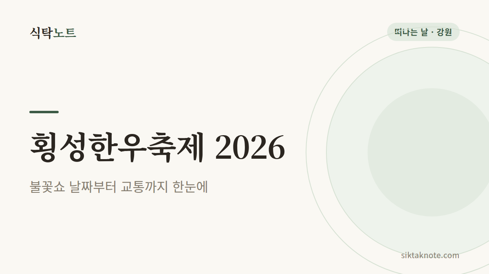

밥상 위의 작은 궁금증, 같이 풀어봐요
떡이 딱딱해져서 막막했던 순간의 해결법부터, 밥상에서 시작해 우리 지역 곳곳으로 떠나는 축제 소식과 맛 이야기, 옛이야기까지 쉽고 따뜻하게 모았어요.
지금 읽을 글

2026년 10월 강원도 축제 일정 — 날짜별로 한눈에 정리
2026년 10월 강원도에서 열리는 횡성한우축제, 춘천막국수닭갈비축제, 양양송이연어축제, 강릉커피축제, 원주 만두축제 등 11개 행사의 날짜와 장소를 확인해 정리했습니다. 주말별 추천도 함께 담았습니다.

진주냉면과 진주비빔밥 이야기 — 유등축제 가기 전에 알아둘 두 그릇
진주 남강유등축제를 보러 간다면 맛볼 만한 진주냉면과 진주비빔밥의 특징과 유래를 정리했어요. 해물 육수와 메밀·고구마 전분 면, 육회와 선짓국, 유래설이 갈리는 부분을 쉽게 풀었습니다.

연오랑 세오녀 이야기 — 해와 달이 빛을 잃은 포항 바닷가의 전설
신라 시대 포항 바닷가에서 일본으로 건너간 연오랑과 세오녀 부부 이야기를 쉽게 풀어 썼어요. 해와 달이 빛을 잃은 사연, 비단 제사, 해석의 차이와 이야기가 남은 포항의 장소를 소개합니다.

단종과 영월 이야기 — 청령포에서 장릉까지, 기록과 전설 사이
어린 임금 단종이 영월 청령포로 유배되어 생을 마치기까지, 엄흥도가 시신을 거둔 이야기와 장릉까지를 정리했어요. 기록마다 다른 부분과 이야기가 남은 청령포, 관풍헌, 자규루, 장릉 방문 정보도 담았습니다.

춘천막국수닭갈비축제 2026 가이드 — 통일 가격, 프로그램, 소양강 하루 코스
춘천막국수닭갈비축제는 2026년 10월 14일부터 18일까지 공지천 일대에서 열려요. 닭갈비 9,900원과 막국수 6,900원 통일 가격, 프로그램, 주변 코스와 음식 이야기를 정리했습니다.

횡성한우축제 2026 가이드 — 불꽃쇼 날짜, 일자별 공연, KTX 임시정차
제22회 횡성한우축제는 2026년 10월 7일부터 11일까지 섬강둔치에서 열려요. 한우구이터 이용 방법, 일자별 공연과 불꽃쇼, KTX 임시정차, 가까운 볼거리와 가기 전에 확인할 것을 정리했습니다.

설문대할망 이야기 — 한라산과 오름을 만든 거인 할머니
제주를 만든 거인 설문대할망의 이야기를 쉽게 풀어 썼어요. 치마폭의 흙으로 한라산과 오름을 만든 이야기, 99벌 명주 다리, 오백장군 전설과 이야기가 남은 장소를 소개합니다.

생밤 보관법 — 냉장·냉동 보관과 벌레 먹은 밤 고르는 법
생밤은 마르지 않게 신문지에 싸서 냉장하고, 오래 두려면 냉동하세요. 밤을 사 왔을 때 확인할 점, 냉장·냉동 보관 순서, 곰팡이나 벌레 먹은 밤을 구별하는 법을 정리했습니다.

당근 오래 보관하는 법 — 통당근, 썬 당근, 냉동 보관
당근은 꼭지를 자르고 키친타월에 싸서 냉장하면 오래 가요. 통당근과 썰어 둔 당근 보관법, 데쳐서 냉동하는 법, 흐물거리는 당근을 구별하는 방법을 정리했습니다.

버섯 보관법 — 씻지 말고 냉장, 오래 두려면 냉동·건조
버섯은 씻지 않고 키친타월을 깔아 냉장하면 며칠 더 싱싱해요. 냉장·냉동·건조 보관 순서와 미끈거리는 버섯을 버려야 하는 신호를 정리했습니다. 표고, 양송이, 새송이에 모두 쓸 수 있어요.

무 오래 보관하는 법 — 통무, 자른 무, 냉동까지
무는 잎을 먼저 잘라내고 신문지로 감싸 보관하면 오래 가요. 통무와 자른 무 보관법, 썰어서 냉동하는 법, 바람 든 무 처리법과 버려야 할 신호를 정리했습니다.

사과 오래 보관하는 법 — 냉장 보관과 갈변 막기
사과는 한 개씩 감싸 냉장고 채소칸에 두면 오래 가고, 다른 과일과는 떨어뜨려 두는 게 좋아요. 보관 순서, 잘라 둔 사과 갈변 막는 법, 버려야 할 신호를 정리했습니다.

양배추 오래 보관하는 법 — 통양배추와 잘라 쓴 양배추
통양배추는 심지를 도려내고 젖은 키친타월을 채워 냉장하면 2~3주 갑니다. 잘라 쓴 양배추, 채 썬 양배추, 냉동 보관법과 변색·곰팡이 판단 기준을 정리했습니다.